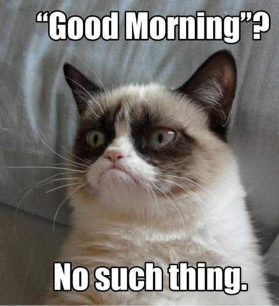

Un mème internet est un anglicisme (venant d'« Internet meme »)
utilisé pour décrire un élément ou un phénomène repris et décliné en masse sur internet.
De nos jours, pourquoi dire les choses avec des poêmes? Pensez au Mèmes,
le meilleurs moyen d'être drôle et romantique version geek !
Source
Nyan Cat ou Pop Cat
est un mème Internet, consistant en un gif animé en 8-bits d’un chat volant gris avec le corps en Pop-Tart,
avec un arc-en-ciel derrière lui.
ou bien d’une vidéo de l’image animée avec une version remixée de la musique Nyanyanyanyanyanyanya!.
D'ailleurs je suis vraiment sûre en ce moment que vous voulez tuer quelqu'un à force d'entendre sa musique!
Source

Grumpy Cat, la joie à l'état pur
Grumpy Cat, de son véritable nom Tardar Sauce1, née le 4 avril 2012 à Morristown,
en Arizona (États-Unis), est une chatte célèbre sur internet,
étant devenu un mème Internet en raison de son expression faciale boudeuse!
Vous ressentez la joie vous envahir à la vue de ce mignonet petit chat? Non? Sérieusement!? TM Bon Ok c'est vrai: ce chat est déprimant!
Source
Comme le bon goût passe aussi par la musique, voici une courte vidéo mashup des mèmes d'internet,
mettez plus fort: le son est bon